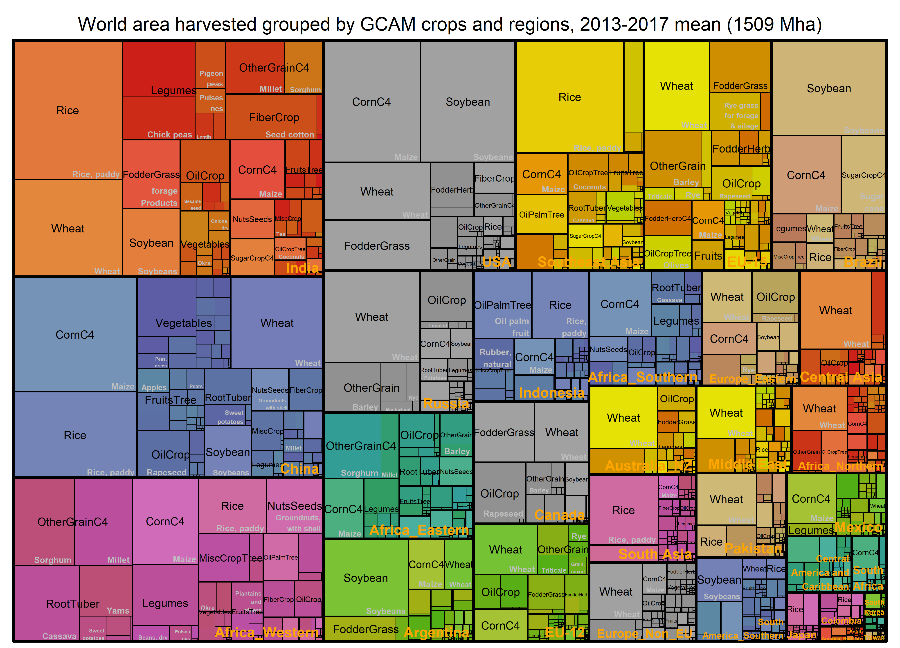
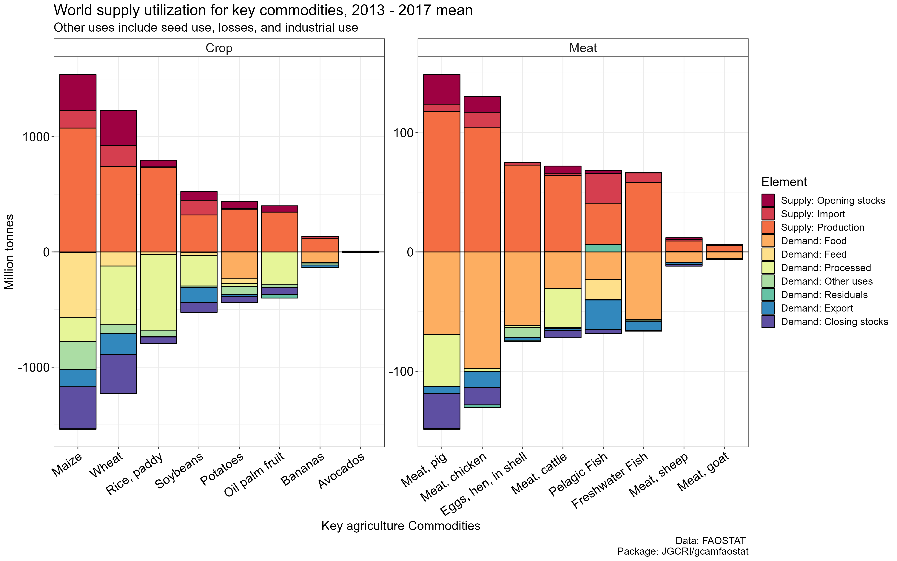

Here we visualize the processed data to illustrate the
connection of harvested area and food calories via supply utilization
accounts.
* We focus on the 2013 - 2017 mean as they are the base calibration
years of GCAM. * A user can change the years and mappings as desired. *
All the data used are from gcamfaostat.
* Code for generating the figures are provided in the bottom.
* The visualization here will be continuously updates (suggestions and
pull requests welcome).
* Chord diagram for trade and food processing nests will be added
later.
* We will also try using shiny apps to make them interactive.
Population
Wrold population was around 7.4 billion in 2013 - 2017. It has increased to 7.8 billion in 2020 and reached 8 billion in mid-Nov 2022. In 2020, the most populous regions are China (14.4 B), India (13.8 B), USA (3.3 B), Indonesia (2.7 B), Pakistan (2.2 B), Brazil (2.13 B), Nigeria (2.06 B), Bangladesh (1.65 B), Russian Federation (1.46 B) and Mexico (1.3 B).
Harvested area
 World area harvested (shares) grouped by GCAM
crops based on the 2013 – 2017 mean values. The total harvested area is
1509 million hectares (Mha).
World area harvested (shares) grouped by GCAM
crops based on the 2013 – 2017 mean values. The total harvested area is
1509 million hectares (Mha).
 Food calories availability per capita per day grouped by GCAM regions and commodities based on the 2013 – 2017 mean values. The world average value is 2902 Kcal per capita per day (Kcal/ca/d).
Yield growth
Surprisingly, oil palm fruit yield did not grow at regional levels (boxplot) in the past 30 years. But world yield increased by ~50% due to the production shift to high-yielding regions. The opposite is true for root and tuber crops
Supply-utilization
 World supply utilization accounts for key commodities based on the 2013 – 2017 mean values. Note that negative values are used for demand categories and positive values are used for supply categories. Other uses include seed use, losses, and industrial use; residuals (mostly small) indicate the imbalance in the data, mainly implying the quality of the source data. The total supply is equal to the total demand.
Code for generating figures
0. Load package data
- Load gcamfaostat locally, assuming driver_drake() was run so that data can be loaded from cache.
devtools::load_all()
# Load other libraries
library(ggplot2)
library(dplyr)
library(treemap)
library(RColorBrewer)
## Define input data needed ----
MODULE_INPUTS <-
c(FILE = "aglu/FAO/FAO_ag_items_PRODSTAT",
FILE = "common/GCAM_region_names",
FILE = "common/iso_GCAM_regID",
FILE = "aglu/AGLU_ctry",
"FAO_Food_Macronutrient_All_2010_2019",
"QCL_CROP_PRIMARY",
"QCL_FODDERCROP",
"Bal_new_all",
"OA")- To get more information of the input data and trace their use in the
package, use
infoordstracefunction. They are functions inherited fromgcamdatafor tracing data processing flows.
- Load the data defined in
MODULE_INPUTSfrom drake cache
# Load the data to all_data as a list
MODULE_INPUTS %>% load_from_cache() -> all_data
# Assign the data items to their names as data frames
get_data_list(all_data, MODULE_INPUTS, strip_attributes = TRUE)- Define a base year period for visualizing cross-sectional data. The mean value will be used. Note that 2013-2017 is used here since 2015 is the GCAM v7 base year. However, this can be changed to other year(s)
BaseYear <- c(2013:2017)1. Population
- Get data ready
# simplify population data
OA %>% filter(element_code == 511, item_code == 3010) %>%
transmute(area, area_code, year, value = value / length(BaseYear)) %>%
filter(year %in% BaseYear) %>%
gcamdata::left_join_error_no_match(AGLU_ctry %>% select(area = FAO_country, iso), by = "area") %>%
gcamdata::left_join_error_no_match(iso_GCAM_regID %>% select(iso, GCAM_region_ID), by = "iso") %>%
left_join(GCAM_region_names, by = "GCAM_region_ID") ->
POP #1000 persons- Plot and save
# Figure title
paste0("World population grouped by GCAM 32 regions, ", min(BaseYear), "-", max(BaseYear), " mean (",
round(POP %>% summarize(value = sum(value) / 1000000),1), " Billion)") -> title
treemap_wrapper(
.DF = POP %>% select(region, area, value),
.Depth = 2,
.Palette = "YlOrRd", .LastLabelCol = "blue",
.FigTitle = title, .FigTitleSize = 16,
.SaveName = "Fig_WorldPopulation",
.SaveScaler = 1.2
)- Preview
2. Harvested area
- Get data ready
QCL_CROP_PRIMARY %>%
bind_rows(QCL_FODDERCROP) %>%
filter(year %in% BaseYear) %>%
filter(element == "Area harvested") %>%
# Change to Mha
mutate(value = value / 1000000) %>% select(-unit) %>%
# the iso mapping in AGLU_ctry works good now
gcamdata::left_join_error_no_match(AGLU_ctry %>% select(area = FAO_country, iso), by = "area") %>%
gcamdata::left_join_error_no_match(iso_GCAM_regID %>% select(iso, GCAM_region_ID), by = "iso") %>%
left_join(GCAM_region_names, by = "GCAM_region_ID") %>%
group_by(region, item_code, item) %>%
# 5-year average
summarize(value = sum(value) / length(BaseYear), .groups = "drop") %>%
ungroup() %>%
inner_join(
FAO_ag_items_PRODSTAT %>%
filter(!is.na(item), !is.na(GCAM_commodity)) %>%
select(item_code, GCAM_subsector), by = "item_code") ->
Tree_Area_Reg_Sector- Plot and save
paste0("World area harvested grouped by GCAM crops, ", min(BaseYear), "-", max(BaseYear), " mean (",
round(Tree_Area_Reg_Sector %>% summarize(value = sum(value) ),0), " Mha)") -> title
treemap_wrapper(
.DF = Tree_Area_Reg_Sector %>% select(GCAM_subsector, item, value),
.Depth = 2,
.Palette = "Set2",
.FigTitle = title, .FigTitleSize = 16,
.SaveName = "Fig_WorldAreaHarvested",
.SaveScaler = 1.1
)
paste0("World area harvested grouped by GCAM crops and regions, ", min(BaseYear), "-", max(BaseYear), " mean (",
round(Tree_Area_Reg_Sector %>% summarize(value = sum(value) ),0), " Mha)") -> title
treemap_wrapper(
.DF = Tree_Area_Reg_Sector %>% select(region, GCAM_subsector, item, value),
.Depth = 3,
.Palette = "Set2",
.FigTitle = title, .FigTitleSize = 20,
.SaveName = "Fig_WorldAreaHarvestedReg",
.SaveScaler = 1.6
)- Preview
3. Yield
- Get data ready
YieldBaseYear = 1990
QCL_CROP_PRIMARY %>%
# disaggregate dissolved regions in history
FAO_AREA_DISAGGREGATE_HIST_DISSOLUTION_ALL(SUDAN2012_MERGE = T) %>%
# the iso mapping in AGLU_ctry works good now
left_join_error_no_match(AGLU_ctry %>% select(area = FAO_country, iso), by = "area") %>%
left_join_error_no_match(iso_GCAM_regID %>% select(iso, GCAM_region_ID), by = "iso") %>%
left_join(GCAM_region_names, by = "GCAM_region_ID") %>%
group_by(GCAM_region_ID, region, element, unit, year, item_code) %>%
# aggregate to 32 GCAM regions
summarize(value = sum(value), .groups = "drop") %>%
inner_join(
FAO_ag_items_PRODSTAT %>%
filter(!is.na(item), !is.na(GCAM_commodity)) %>%
select(item_code, GCAM_subsector), by = "item_code") %>%
group_by_at(vars(GCAM_region_ID, region, GCAM_subsector, year, element)) %>%
# Aggregate to GCAM sectors
summarize(value = sum(value), .groups = "drop") %>%
filter(year %in% c(YieldBaseYear, 2020)) %>%
spread(element, value) %>%
filter(`Area harvested` > 0) %>%
# Calculate regio-sector yield
mutate(Yield = Production / `Area harvested`) %>%
gather(element, value, `Area harvested`, Production, Yield) ->
Yield_1990_2020_GCAMRegSector
Yield_1990_2020_GCAMRegSector %>%
filter(element == "Yield") %>%
group_by_at(vars(-year, -value)) %>%
# Calculate growth rate
mutate(value = value / first(value)) %>%
filter(!is.na(value)) %>% filter(year != YieldBaseYear) ->
Yield_1990_2020_GCAMRegSector_Growth
Yield_1990_2020_GCAMRegSector_Growth %>%
# Join area to get weight
left_join_error_no_match(Yield_1990_2020_GCAMRegSector %>%
filter(element == "Area harvested") %>% spread(element, value),
by = c("GCAM_region_ID", "region", "GCAM_subsector", "year")) %>%
group_by_at(vars(GCAM_subsector, year)) %>%
summarize(value = weighted.mean(value, w = `Area harvested`), .groups = "drop")->
Yield_1990_2020_WorldGCAMSector_Growth_FixdArea
Yield_1990_2020_GCAMRegSector %>%
spread(element, value) %>%
group_by_at(vars(GCAM_subsector, year)) %>%
summarize(Production = sum(Production),
`Area harvested` = sum(`Area harvested`), .groups = "drop") %>%
mutate(Yield = Production / `Area harvested`) %>%
gather(element, value, `Area harvested`, Production, Yield) %>%
filter(element == "Yield") %>%
group_by_at(vars(-year, -value)) %>%
mutate(value = value / first(value)) %>%
filter(!is.na(value)) %>% filter(year != YieldBaseYear) ->
Yield_1990_2020_WorldGCAMSector_Growth_ChangingArea
# Order sectors
Yield_1990_2020_WorldGCAMSector_Growth_ChangingArea%>%
arrange(-value) %>% pull(GCAM_subsector) -> SectorRank- Plot and save
Yield_1990_2020_GCAMRegSector_Growth %>%
mutate(GCAM_subsector = factor(GCAM_subsector, levels = SectorRank)) %>%
ggplot() +
geom_boxplot(aes(x = GCAM_subsector, y = value, fill = GCAM_subsector), outlier.size = -1) +
geom_line(data = Yield_1990_2020_WorldGCAMSector_Growth_ChangingArea %>%
mutate(GCAM_subsector = factor(GCAM_subsector, levels = SectorRank)),
aes(x = GCAM_subsector, y = value, group = year), color = "blue", size = 1.6, alpha = 0.9 ) +
geom_point(data = Yield_1990_2020_WorldGCAMSector_Growth_FixdArea,
aes(x = GCAM_subsector, y = value), fill = "red", size = 2.5, shape = 21, color = "black" ) +
scale_y_continuous(limits = c(0, 3.3)) +
labs(y = "1990 = 1", x = "GCAM Crop Sector",
title = "Yield change in 1990 - 2020, distribution (Tukey style) across GCAM regions.",
subtitle = "World mean growth (blue line) vs. weighted mean of regional growth (red dots)",
caption = "Data: FAOSTAT \n Package: JGCRI/gcamfaostat") +
theme_bw() +
theme(text = element_text(size = 16),
axis.text = element_text(colour = "black", size = 16),
axis.text.x = element_text(angle = 40, hjust = 1, vjust = 1),
strip.background = element_rect(fill = "grey90"),
legend.position = "none") -> p
ggsave(file.path("../man/figures", "WorldYield.png"), p, width = 15, height = 10)- Preview
4. Supply-utilization
- Get data ready
# Define elements and items
c("Opening stocks", "Import", "Production") -> ElEMSupply
c("Food", "Feed", "Processed", "Other uses", "Export", "Closing stocks", "Residuals") -> ELEMDemand
c(ElEMSupply, ELEMDemand) -> ELEMAll
c(ElEMSupply, ELEMDemand %>% rev) -> ELEMLevel
c(paste0("Supply: ", ElEMSupply), paste0("Demand: ", ELEMDemand) %>% rev ) -> ELEMLabel
c("Maize", "Wheat", "Rice, paddy", "Soybeans", "Potatoes", "Oil palm fruit", "Bananas", "Avocados") -> KeySectorCrops
# These are items from FAO
c("Meat, pig", "Meat, chicken", "Eggs, hen, in shell", "Meat, cattle",
"Pelagic Fish", "Freshwater Fish" , "Meat, sheep", "Meat, goat") -> KeySectorMeat
c(KeySectorCrops, KeySectorMeat) -> SECLevel
# Define color pal.
c(brewer.pal(n = length(ELEMAll), name = "Spectral")[1:length(ElEMSupply)],
brewer.pal(n = length(ELEMAll), name = "Spectral")[length(ElEMSupply)+1:length(ELEMDemand)]
) -> ColUpdate
Bal_new_all %>%
filter(year %in% BaseYear) %>%
# Aggregate seed and loss into others
mutate(element = replace(element, element %in% c("Seed", "Loss"), "Other uses")) %>%
group_by_at(vars(-value, -area_code, -area)) %>%
summarize(value = sum(value) / 1000, .groups = "drop") %>%
filter(element %in% ELEMAll, item %in% SECLevel) %>%
# year-average
group_by_at(vars(-value, -year)) %>%
summarize(value = mean(value), .groups = "drop") %>%
mutate(value = if_else(!element %in% ElEMSupply, -value, value)) %>%
mutate(element = factor(element, levels = ELEMLevel, labels = ELEMLabel),
item = factor(item, levels = SECLevel, labels = SECLevel)) %>%
mutate(CropMeat = if_else(item %in% KeySectorCrops, "Crop", "Meat")) ->
DF_SUA- Plot and save
DF_SUA %>%
ggplot() + facet_wrap(~CropMeat, scales = "free") +
geom_bar(aes(x = item, y = value, fill = element),
stat = "identity", color = "black", position="stack") +
geom_hline(yintercept = 0)+
scale_fill_manual(values = c("Supply: Opening stocks" = ColUpdate[1],
"Supply: Import" = ColUpdate[2],
"Supply: Production" = ColUpdate[3],
"Demand: Food" = ColUpdate[4],
"Demand: Feed" = ColUpdate[5],
"Demand: Processed" = ColUpdate[6],
"Demand: Other uses" = ColUpdate[7],
"Demand: Residuals" = ColUpdate[8],
"Demand: Export" = ColUpdate[9],
"Demand: Closing stocks" = ColUpdate[10] ) ) +
labs(x = "Key agriculture Commodities",
y = "Million tonnes", fill = "Element",
title = "World supply utilization for key commodities, 2013 - 2017 mean",
subtitle = "Other uses include seed use, losses, and industrial use",
caption = "Data: FAOSTAT \n Package: JGCRI/gcamfaostat") +
theme_bw() +
theme(text = element_text(size = 16),
axis.text = element_text(colour = "black", size = 16),
axis.text.x = element_text(angle = 35, hjust = 1, vjust = 1),
strip.background = element_rect(fill = "grey100"),
strip.text = element_text(size = 16)) -> p;p
ggsave(file.path("../man/figures", "Fig_WorldSUA.png"), p, width = 16, height = 10)- Preview
5. Food calories
- Get data ready
FAO_Food_Macronutrient_All_2010_2019 %>%
filter(year %in% BaseYear) %>%
# Aggregate to region and GCAM commodity
dplyr::group_by_at(vars(GCAM_region_ID, GCAM_commodity, year, macronutrient)) %>%
summarise(value = sum(value), .groups = "drop") %>%
# Mean over aglu.MODEL_MACRONUTRIENT_YEARS
dplyr::group_by_at(vars(-year, -value)) %>%
summarise(value = mean(value), .groups = "drop") %>%
spread(macronutrient, value) %>%
left_join_error_no_match(
POP %>% group_by(GCAM_region_ID, region) %>%
summarize(POP = sum(value)/1000, .groups = "drop"), # Million
by = "GCAM_region_ID"
) %>%
# Grouping
mutate(MeatCrop = if_else(GCAM_commodity %in%
c("Beef", "SheepGoat", "Dairy", "OtherMeat_Fish", "Pork", "Poultry"), "Meat", "Crop")) %>%
mutate(Food = if_else(GCAM_commodity %in%
c("Beef", "SheepGoat"), "Ruminant", "Crops"),
Food = if_else(GCAM_commodity %in% c("OtherMeat_Fish", "Pork", "Poultry"),
"Non-ruminant", Food),
Food = if_else(GCAM_commodity %in% c("Dairy"),
"Dairy", Food),
Food = if_else(GCAM_commodity %in% "NEC", "Other processed", Food),
Food = if_else(GCAM_commodity %in% c("OilCrop", "Soybean", "OilPalm", "FiberCrop"), "Oilseed", Food),
Food = if_else(GCAM_commodity %in% c("Corn", "Wheat", "Rice", "OtherGrain"), "Cereal grains", Food)) %>%
mutate(PcPdKcal = MKcal / POP / 365) ->
DF_Macronutrient_FoodItem- Plot and save
DF_Macronutrient_FoodItem %>%
summarize(PKcal = sum(MKcal)/10^9) %>%
left_join(POP %>% summarize(BPOP = sum(value) / 1000000), by = character()) %>%
mutate(PcPdKcal = PKcal / BPOP / 365 * 1000000) -> WorldSTAT
# World level by commodity
paste0("World food calories availability, ", min(BaseYear), "-", max(BaseYear), " mean (",
round(WorldSTAT$PKcal,2), " Peta-Kcal or ", round(WorldSTAT$PcPdKcal, 0)," Kcal/ca/d)") ->
title
treemap_wrapper(
.DF = DF_Macronutrient_FoodItem %>% select(Food, GCAM_commodity, value = MKcal),
.Depth = 2,
.FigTitle = title, .FigTitleSize = 14,
.SaveName = "Fig_WorldFoodCalories",
.SaveScaler = 1
)
# By commodity and region
paste0("World food calories availability by region and commodity, ", min(BaseYear), "-", max(BaseYear), " mean (",
round(WorldSTAT$PKcal,2), " Peta-Kcal)") ->
title
treemap_wrapper(
.DF = DF_Macronutrient_FoodItem %>% select(region, Food, GCAM_commodity, value = MKcal),
.Depth = 3,
.FigTitle = title, .FigTitleSize = 18,
.SaveName = "Fig_WorldFoodCaloriesReg",
.SaveScaler = 1.6
)
# By commodity and region per ca per day
paste0("Per ca. per day food calories availability by region and commodity, ",
min(BaseYear), "-", max(BaseYear), " mean (world: ", round(WorldSTAT$PcPdKcal, 0)," Kcal/ca/d)") ->
title
treemap_wrapper(
.DF = DF_Macronutrient_FoodItem %>% select(region, Food, GCAM_commodity, value = PcPdKcal),
.Depth = 3,
.FigTitle = title, .FigTitleSize = 20,
.SaveName = "Fig_WorldFoodCaloriesRegPcPerDay",
.SaveScaler = 1.8
)- Preview

6. Trade
See Cast Study for details.